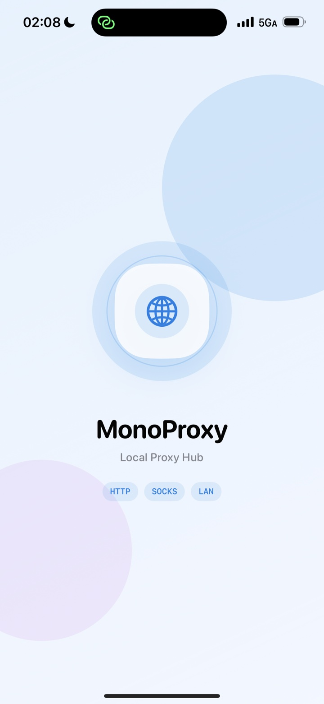
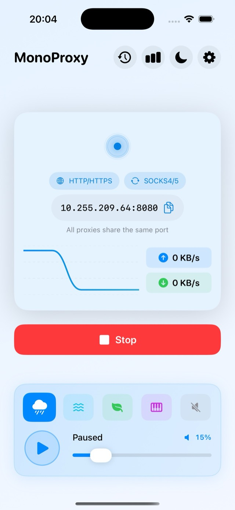
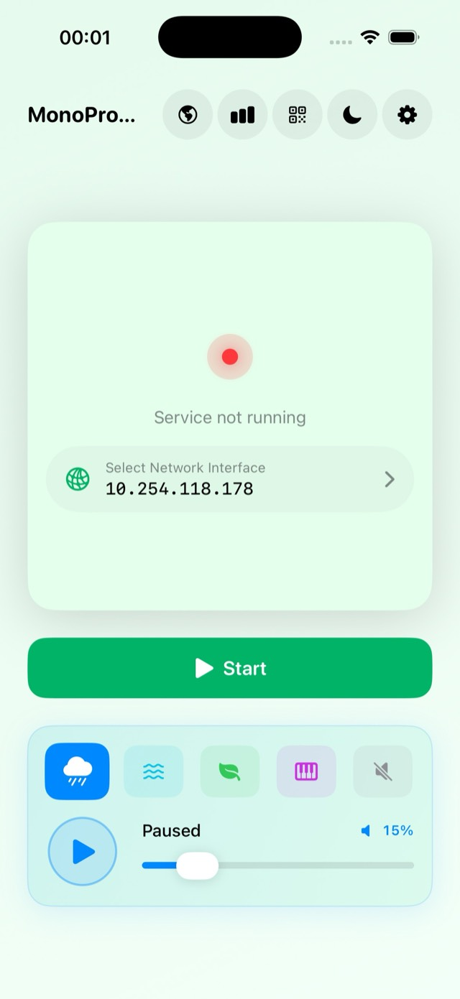
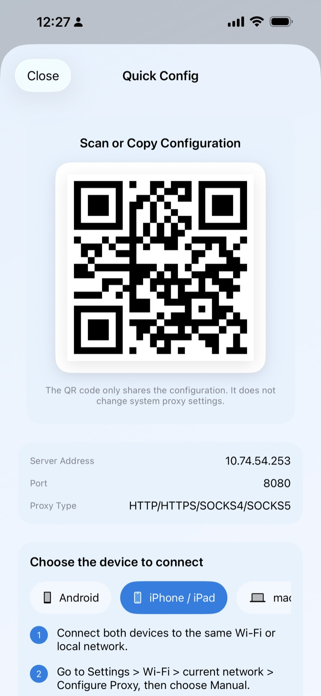
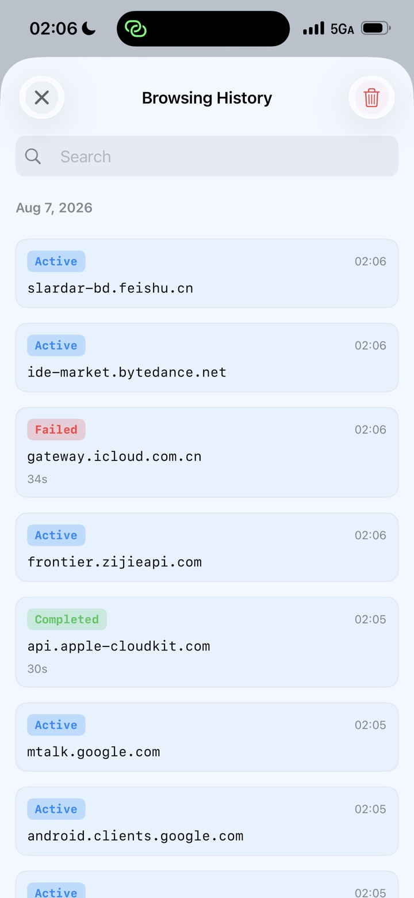
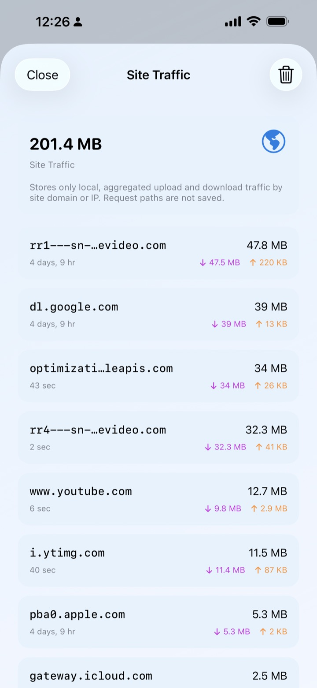

01 / START
Open the hub
Choose the Wi-Fi or LAN address your client can reach, then start the local proxy service.
Turn your iPhone into a local proxy gateway for Macs, PCs, tablets and test devices. Start the service, share one address and know when real client traffic is flowing.

Run MonoProxy once, then route the computers, tablets and test devices already on your Wi-Fi through the same local endpoint.
MonoProxy treats opening a port and proving a client connection as different events, so the status always tells the truth.
Choose the Wi-Fi or LAN address your client can reach, then start the local proxy service.
Open Connect a Device, copy the address or scan the QR code, then follow the guide for your platform.
Listening becomes Client Connected, then Traffic Verified only after data passes through the real proxy path.

Point a Mac, PC, tablet or test device at the same local address. MonoProxy identifies HTTP, HTTPS or SOCKS traffic without making you manage separate ports.
Point every client at your-ip:8080. The host and port stay simple even when the client protocols differ.
The home screen prioritizes starting, sharing and verifying the proxy. Advanced controls remain available without taking over the primary path.
HTTP, HTTPS, SOCKS4, SOCKS4a and SOCKS5 served together. The client doesn't need to know the difference.
Turn on username/password authentication when you need it. Credentials stay on device and never touch a log.
Copy the active address, scan a QR configuration, or follow concise setup steps for iPhone, Android, macOS and Windows.
Listening, Client Connected and Traffic Verified are separate states driven by the real connection and transfer path.
Choose exactly which reachable Wi-Fi or LAN address the proxy listens on. Network changes never switch silently.
See upload and download rates, transferred bytes, accepted clients, active connections and latest verified activity.
Choose rain, ocean waves, forest ambience or gentle piano, then listen while MonoProxy is running.

The layout stays perfectly stable whether the service is running or stopped — no jumps, no wasted space.


A dedicated statistics view summarizes the current session: duration, accepted clients, active connections, transferred bytes and latest verified activity.

MonoProxy runs entirely on your device. It has no account, no analytics SDK and no backend that could see your data.
SOCKS5 username & password are stored locally, never uploaded, and never written to any log.
No tracking, no profiling, no third-party analytics. Proxied traffic is not logged or stored.
HTTPS tunnels are relayed without certificate installation, decryption or content inspection.
Host-only history and site totals are off by default, stored locally, bounded and clearable at any time.
Start once, connect every device and see when real traffic arrives.